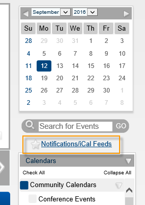
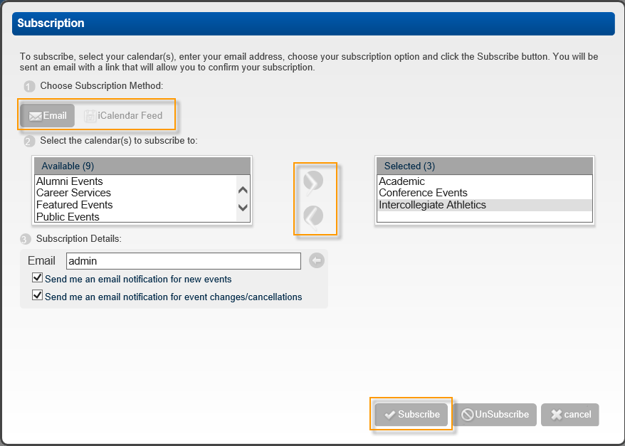

Subscribe to a Calendar
You can subscribe to a calendar so that you are notified of changes to events. This enables you to receive a system-generated email or automatically update calendars in your email system when events are added, modified, or canceled.
- In the Calendars section, click Notifications/iCal Feeds.

- Click the Subscribe icon. The Subscription page opens. The calendars to which you can subscribe appear in the Available Calendars list.

- Choose your subscription method—Email (the default value) or iCalendar feed.
- Email—To receive a confirmation email that contains a link that you must click to activate or edit your subscription. If you select this option, go to “To subscribe using email.”
- iCalendar feed—To automatically add the selected calendars to your email program and subscribe to updates to the calendar. If you select this option, the Email field and email options are removed from the page.
- Use the right and left arrows to move calendars from and to your Selected list.
See Also: Subscribing to a Calendar Using Email and Subscribing to a Calendar Using iCal.